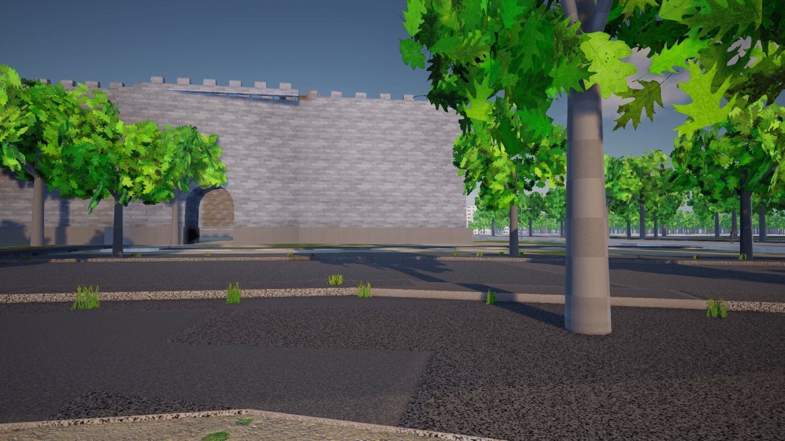
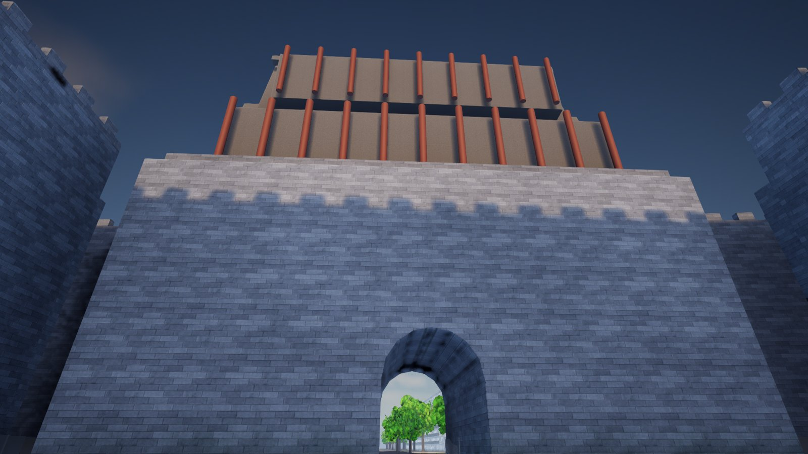
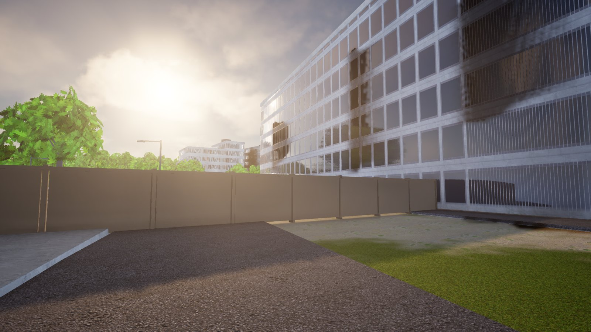
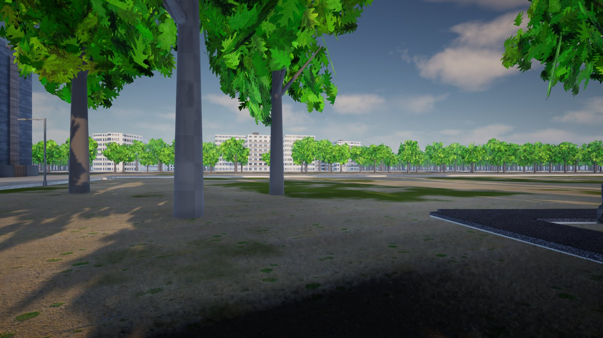
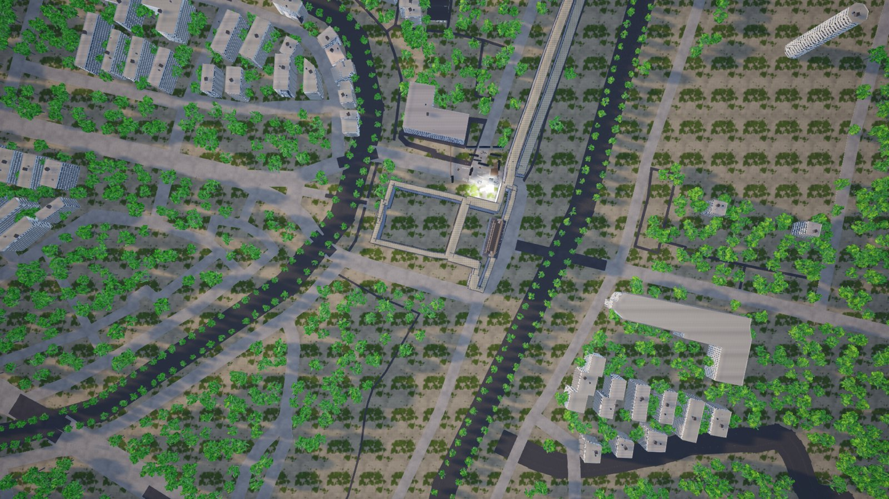

这是一个跨模型 AI 协作实验的产物:以南京中华门—秦淮河片区的真实测绘数据 (OpenStreetMap,384 栋建筑、195 条道路、明城墙环线)为底,在 Unreal Engine 5.8 中重建的第一人称训练演习原型。对抗目标是游荡的僵尸(不描绘任何针对人的暴力); 这座城市与它的历史被认真对待。
当前状态:第一轮"画面优先"改造已完成并上线云端串流(NVIDIA T4 + Lumen)。独立评审(Codex)对改造前后同机位打分:
1.6 → 2.6 / 10(AAA 标准),判定为真实但有限的提升;它列出的五项停机问题在下方逐条公开。
从 2.5 分到重建 · The rebuild
此前的网页版(Three.js)被独立评审团以 AAA 标准评为 2.5–3/10 后,项目按用户决定 迁移至 Unreal Engine 5.8。下面是同一视点的对比与当前状态。






评审停机项 · What the judge said must change
- 地标仍是代理轮廓:城墙缺少收分、券脸、排水口等结构语言,城楼屋顶是平板加圆柱。
- 植被造型、色彩与布置同时失真:树干过粗,克隆感强,树冠遮挡门楼。
- 地表、道路与河岸没有形成可信系统:沥青补丁互相穿插,泥地无结构,河面不可见。
- 材质尺度与表面变化暴露平铺;施工围挡与代理方块仍在黄金机位内。
- 最终帧光照与清场未通过:天空高光溢出、局部黑斑、拱洞接触区发黑。
诚实的清单 · Honest ledger
敌人已按用户决定改为僵尸皮肤(仍不描绘任何针对人的暴力);五目标任务尚未接入玩法; 串流服务器为按需启动的 Spot 实例,无人观看 20 分钟自动休眠。每一步都有渲染帧或日志为证,全部记录在版本库中。